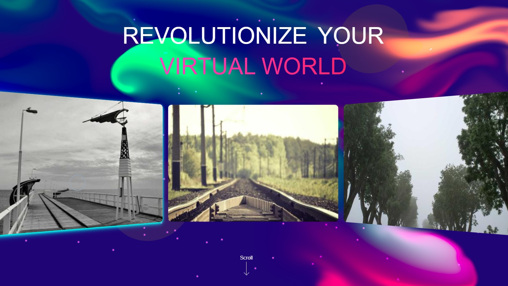
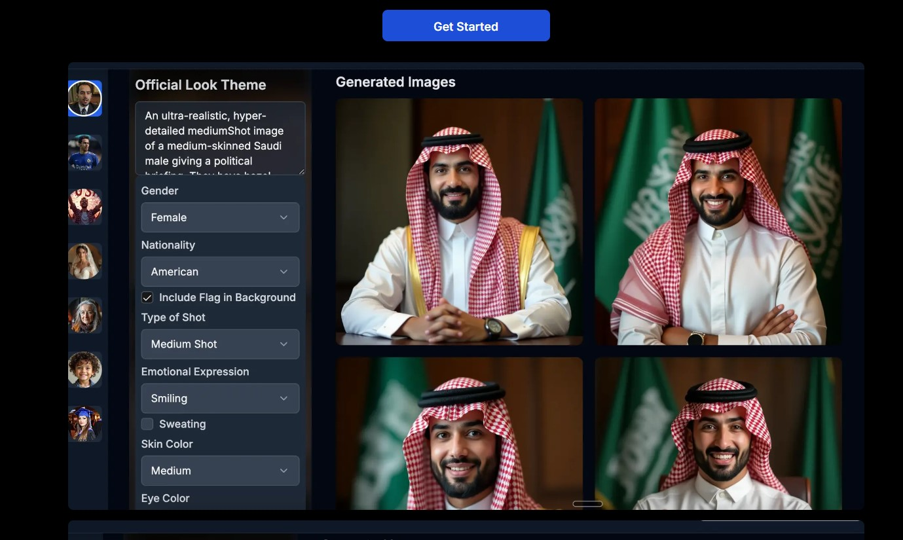
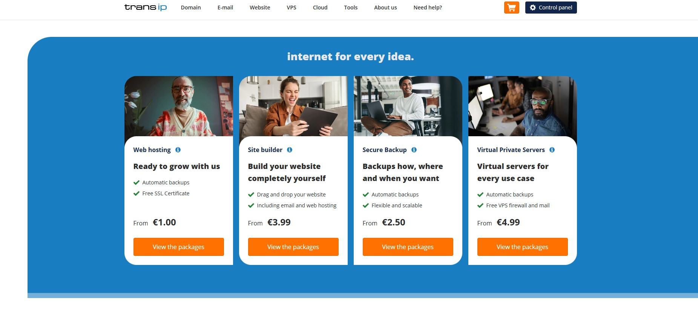

Projects

Talengo Jobs
Job site development with MERN stack and Eden AI integration
Timeline
Duration: 3 months
Role: Full Stack Developer
Key Achievements
- AI-powered job matching using Eden AI
- Scalable backend with AWS integration
Technical Stack
MERN Stack
Eden AI
AWS
Key Features
- AI-based job recommendations
- Real-time job listing updates
- Admin panel for job management
MERN Stack
AWS
Technical Expertise
- Developed job matching system using Eden AI for smarter job recommendations
- Built scalable backend with AWS Lambda and EC2
- Implemented real-time updates for job listings using WebSockets
Key Challenges & Solutions
- Challenge: High volume of job data processing
Solution: Optimized database queries and leveraged AWS for scaling

View Live Site
Oor
3D interactive website with Three.js and Next.js
Timeline
Duration: 1 month
Role: Frontend Developer
Key Achievements
- Immersive 3D animations using Three.js
- Optimized performance with Next.js SSR
Technical Stack
Next.js
Three.js
Key Features
- Interactive 3D visualizations
- Seamless integration with Next.js
- High-performance rendering with Three.js
Next.js
Three.js
Technical Expertise
- Developed interactive 3D models using Three.js
- Optimized for fast performance and SEO using Next.js
Key Challenges & Solutions
- Challenge: Complex 3D rendering performance
Solution: Optimized geometry and used WebGL for better rendering

View Live Site
AI Captures
Advanced AI image generator using OpenAI API and Next.js
Timeline
Duration: 2 months
Role: Full Stack Developer
Key Achievements
- Generated high-quality images with OpenAI's API
- Fast and responsive image rendering
Technical Stack
Next.js
OpenAI
Vercel
Key Features
- AI-powered image generation
- Fast deployment with Vercel
- OpenAI integration for high-quality image rendering
Next.js
OpenAI
Technical Expertise
- Integrated OpenAI for image generation
- Deployed the app on Vercel for high availability
Key Challenges & Solutions
- Challenge: Ensuring high-quality image output
Solution: Fine-tuned OpenAI's parameters for image optimization

View Live Site
TransIP
Web hosting and email service platform for the Netherlands
Timeline
Duration: 4 months
Role: Full Stack Developer
Key Achievements
- Scalable AWS infrastructure for hosting
- Seamless email service integration
Technical Stack
AWS
MERN Stack
VPN
Key Features
- Managed web hosting and email services
- Secure VPN integration
AWS
MERN Stack
Technical Expertise
- Optimized AWS infrastructure for better scalability
- Built secure email systems integrated with VPNs
Key Challenges & Solutions
- Challenge: Hosting scalability
Solution: Leveraged AWS services like EC2 and S3 for optimal performance